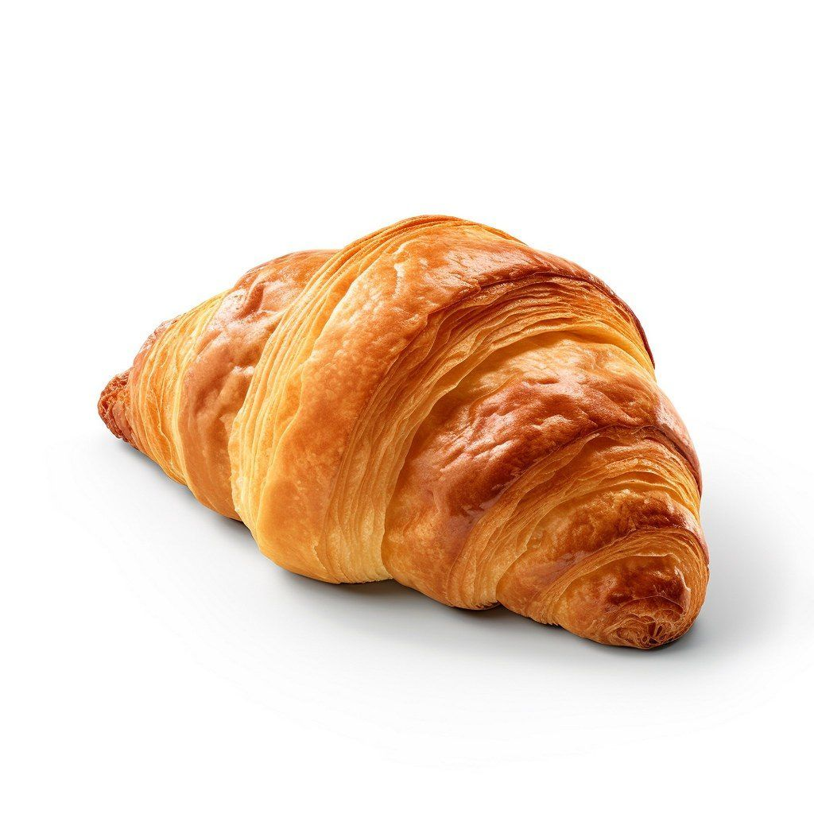
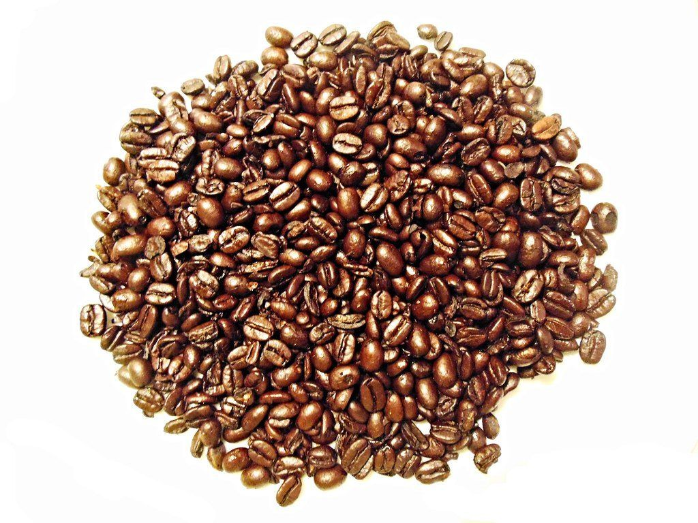

制作側の連想
コンパクトケースの部位を、配置図にしてみる
このサイトは、手のひらに収まる丸いコンパクトケースを開いて、上から見た図にしたつもりで作りました。六つの部位に番号をふり、上の図と並べています。制作側の連想で、お店の理念・由来とは無関係です。実在の製品の仕様を示すものでもありません。
凡例
六つの部位
- 1ふた開閉する外側のカバー。内側に鏡をつけておく側の半分。
- 2鏡ふたの内側に貼り付ける、小さな丸い鏡。
- 3ヒンジふたと本体をつなぎ、開け閉めの軸になる小さな蝶番。
- 4中皿パウダーなどを収める、本体の内側の丸い皿。
- 5パフ中皿の上にのせる、やわらかな丸いスポンジ。
- 6ツメ閉じたときにふたを留めておく、手前側の小さな突起。
ギャラリー(イメージ)
パンとコーヒー豆、器の写真




写真はイメージです。お店のものではなく、お店で提供している商品を示すものでもありません。

ご案内
お店のこと(確認できたものだけ)
| 所在地 | 〒646-0033 和歌山県田辺市新屋敷町25-1 |
|---|---|
| 電話 | 準備中 |
| 営業時間 | 準備中 |
| 定休日 | 準備中 |
| ご予約 | 準備中 |
| 駐車場 | 準備中 |
| SNS | Instagram @ichie.cafe |